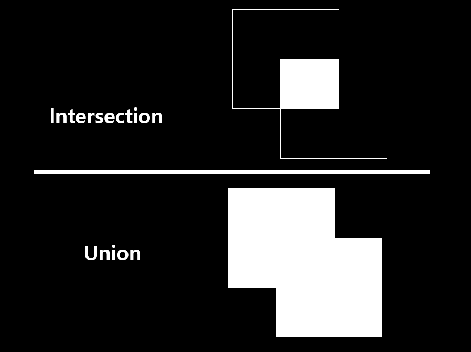

box.c
nms_comparator
int nms_comparator(const void *pa, const void *pb)
{
detection a = *(detection *)pa;
detection b = *(detection *)pb;
float diff = 0;
if(b.sort_class >= 0){
diff = a.prob[b.sort_class] - b.prob[b.sort_class];
} else {
diff = a.objectness - b.objectness;
}
if(diff < 0) return 1;
else if(diff > 0) return -1;
return 0;
}
- 검출 된 box를 비교합니다.
- class probabilty의 차이
- objectness의 차이
do_nms_obj
void do_nms_obj(detection *dets, int total, int classes, float thresh)
{
int i, j, k;
k = total-1;
for(i = 0; i <= k; ++i){
if(dets[i].objectness == 0){
detection swap = dets[i];
dets[i] = dets[k];
dets[k] = swap;
--k;
--i;
}
}
total = k+1;
for(i = 0; i < total; ++i){
dets[i].sort_class = -1;
}
qsort(dets, total, sizeof(detection), nms_comparator);
for(i = 0; i < total; ++i){
if(dets[i].objectness == 0) continue;
box a = dets[i].bbox;
for(j = i+1; j < total; ++j){
if(dets[j].objectness == 0) continue;
box b = dets[j].bbox;
if (box_iou(a, b) > thresh){
dets[j].objectness = 0;
for(k = 0; k < classes; ++k){
dets[j].prob[k] = 0;
}
}
}
}
}
- Objectness를 통해 NMS를 하는 함수 입니다.
qsort: Quick Sortobject가 존재하는 검출 정보를 앞으로 옮깁니다.
- objectness에 따라서 정렬합니다.
- 검출된 박스들의 IOU가 threshold보다 큰 경우 하나를 제거(objectness = 0)합니다.
do_nms_sort
void do_nms_sort(detection *dets, int total, int classes, float thresh)
{
int i, j, k;
k = total-1;
for(i = 0; i <= k; ++i){
if(dets[i].objectness == 0){
detection swap = dets[i];
dets[i] = dets[k];
dets[k] = swap;
--k;
--i;
}
}
total = k+1;
for(k = 0; k < classes; ++k){
for(i = 0; i < total; ++i){
dets[i].sort_class = k;
}
qsort(dets, total, sizeof(detection), nms_comparator);
for(i = 0; i < total; ++i){
if(dets[i].prob[k] == 0) continue;
box a = dets[i].bbox;
for(j = i+1; j < total; ++j){
box b = dets[j].bbox;
if (box_iou(a, b) > thresh){
dets[j].prob[k] = 0;
}
}
}
}
}
- Class Probabilty를 통해 NMS를 하는 함수 입니다.
qsort: Quick Sortobject가 존재하는 검출 정보를 앞으로 옮깁니다.
- class probabilty를 기준으로 정렬합니다.(0 ~ classes)
- 검출된 박스들의 IOU가 threshold보다 큰 경우 하나를 제거(probabilty = 0)합니다.
float_to_box
box float_to_box(float *f, int stride)
{
box b = {0};
b.x = f[0];
b.y = f[1*stride];
b.w = f[2*stride];
b.h = f[3*stride];
return b;
}
- float형 데이터를 box로 만듭니다.
overlap
float overlap(float x1, float w1, float x2, float w2)
{
float l1 = x1 - w1/2;
float l2 = x2 - w2/2;
float left = l1 > l2 ? l1 : l2;
float r1 = x1 + w1/2;
float r2 = x2 + w2/2;
float right = r1 < r2 ? r1 : r2;
return right - left;
}
- 겹치는 width, height를 구합니다.
box_intersection
float box_intersection(box a, box b)
{
float w = overlap(a.x, a.w, b.x, b.w);
float h = overlap(a.y, a.h, b.y, b.h);
if(w < 0 || h < 0) return 0;
float area = w*h;
return area;
}
- 겹치는 영역을 구합니다.
box_union
float box_union(box a, box b)
{
float i = box_intersection(a, b);
float u = a.w*a.h + b.w*b.h - i;
return u;
}
- 겹치는 영역을 포함한 모든 영역을 구합니다.
box_iou
float box_iou(box a, box b)
{
return box_intersection(a, b)/box_union(a, b);
}
- IOU를 계산합니다.

box_rmse
float box_rmse(box a, box b)
{
return sqrt(pow(a.x-b.x, 2) +
pow(a.y-b.y, 2) +
pow(a.w-b.w, 2) +
pow(a.h-b.h, 2));
}
RMSE: 평균 제곱근 오차- box의 평균 제곱근 오차를 구합니다.
derivative
dbox derivative(box a, box b)
{
dbox d;
d.dx = 0;
d.dw = 0;
float l1 = a.x - a.w/2;
float l2 = b.x - b.w/2;
if (l1 > l2){
d.dx -= 1;
d.dw += .5;
}
float r1 = a.x + a.w/2;
float r2 = b.x + b.w/2;
if(r1 < r2){
d.dx += 1;
d.dw += .5;
}
if (l1 > r2) {
d.dx = -1;
d.dw = 0;
}
if (r1 < l2){
d.dx = 1;
d.dw = 0;
}
d.dy = 0;
d.dh = 0;
float t1 = a.y - a.h/2;
float t2 = b.y - b.h/2;
if (t1 > t2){
d.dy -= 1;
d.dh += .5;
}
float b1 = a.y + a.h/2;
float b2 = b.y + b.h/2;
if(b1 < b2){
d.dy += 1;
d.dh += .5;
}
if (t1 > b2) {
d.dy = -1;
d.dh = 0;
}
if (b1 < t2){
d.dy = 1;
d.dh = 0;
}
return d;
}
- 겹치는 선을 구하는 공식을 미분합니다.
dintersect
dbox dintersect(box a, box b)
{
float w = overlap(a.x, a.w, b.x, b.w);
float h = overlap(a.y, a.h, b.y, b.h);
dbox dover = derivative(a, b);
dbox di;
di.dw = dover.dw*h;
di.dx = dover.dx*h;
di.dh = dover.dh*w;
di.dy = dover.dy*w;
return di;
}
- intersection 공식을 미분 합니다.
dunion
dbox dunion(box a, box b)
{
dbox du;
dbox di = dintersect(a, b);
du.dw = a.h - di.dw;
du.dh = a.w - di.dh;
du.dx = -di.dx;
du.dy = -di.dy;
return du;
}
- union 공식을 미분 합니다.
test
void test_dunion()
{
box a = {0, 0, 1, 1};
box dxa= {0+.0001, 0, 1, 1};
box dya= {0, 0+.0001, 1, 1};
box dwa= {0, 0, 1+.0001, 1};
box dha= {0, 0, 1, 1+.0001};
box b = {.5, .5, .2, .2};
dbox di = dunion(a,b);
printf("Union: %f %f %f %f\n", di.dx, di.dy, di.dw, di.dh);
float inter = box_union(a, b);
float xinter = box_union(dxa, b);
float yinter = box_union(dya, b);
float winter = box_union(dwa, b);
float hinter = box_union(dha, b);
xinter = (xinter - inter)/(.0001);
yinter = (yinter - inter)/(.0001);
winter = (winter - inter)/(.0001);
hinter = (hinter - inter)/(.0001);
printf("Union Manual %f %f %f %f\n", xinter, yinter, winter, hinter);
}
void test_dintersect()
{
box a = {0, 0, 1, 1};
box dxa= {0+.0001, 0, 1, 1};
box dya= {0, 0+.0001, 1, 1};
box dwa= {0, 0, 1+.0001, 1};
box dha= {0, 0, 1, 1+.0001};
box b = {.5, .5, .2, .2};
dbox di = dintersect(a,b);
printf("Inter: %f %f %f %f\n", di.dx, di.dy, di.dw, di.dh);
float inter = box_intersection(a, b);
float xinter = box_intersection(dxa, b);
float yinter = box_intersection(dya, b);
float winter = box_intersection(dwa, b);
float hinter = box_intersection(dha, b);
xinter = (xinter - inter)/(.0001);
yinter = (yinter - inter)/(.0001);
winter = (winter - inter)/(.0001);
hinter = (hinter - inter)/(.0001);
printf("Inter Manual %f %f %f %f\n", xinter, yinter, winter, hinter);
}
void test_box()
{
test_dintersect();
test_dunion();
box a = {0, 0, 1, 1};
box dxa= {0+.00001, 0, 1, 1};
box dya= {0, 0+.00001, 1, 1};
box dwa= {0, 0, 1+.00001, 1};
box dha= {0, 0, 1, 1+.00001};
box b = {.5, 0, .2, .2};
float iou = box_iou(a,b);
iou = (1-iou)*(1-iou);
printf("%f\n", iou);
dbox d = diou(a, b);
printf("%f %f %f %f\n", d.dx, d.dy, d.dw, d.dh);
float xiou = box_iou(dxa, b);
float yiou = box_iou(dya, b);
float wiou = box_iou(dwa, b);
float hiou = box_iou(dha, b);
xiou = ((1-xiou)*(1-xiou) - iou)/(.00001);
yiou = ((1-yiou)*(1-yiou) - iou)/(.00001);
wiou = ((1-wiou)*(1-wiou) - iou)/(.00001);
hiou = ((1-hiou)*(1-hiou) - iou)/(.00001);
printf("manual %f %f %f %f\n", xiou, yiou, wiou, hiou);
}
- test 코드 입니다.
Inter: 0.100000 0.100000 0.050000 0.050000
Inter Manual 0.100015 0.100015 0.050012 0.050012
Union: -0.100000 -0.100000 0.950000 0.950000
Union Manual -0.100136 -0.100136 0.950098 0.950098
IOU : 0.500000 0.000000 -0.800000 -0.800000
IOU manual : -0.390865 0.001386 -0.156757 0.039369
실행 결과 입니다. 뭔가 Inter, Union은 미분 값이 들어 맞는데 IOU가 다른 것 같습니다. 문제를 찾아보니 test_iou와 diou는 darknet에서 동작하지 않는 코드라고 합니다. 그래서 diou에 낭비 코드가 있나봅니다.
|| 1이 부분을 지우고 다시 실행하면 아래와 같이 나옵니다.
IOU: 0.392006 0.000000 0.158310 -0.037693
IOU manual -0.390865 0.001386 -0.156757 0.039369
- 몇번 실행해보니 미분 계산 할 떄 음수와 양수를 맞추는데 문제가 계속 생겨 없앤 것 같습니다.
diou
dbox diou(box a, box b)
{
float u = box_union(a,b);
float i = box_intersection(a,b);
dbox di = dintersect(a,b);
dbox du = dunion(a,b);
dbox dd = {0,0,0,0};
if(i <= 0 || 1) { // 이상한 낭비 코드
dd.dx = b.x - a.x;
dd.dy = b.y - a.y;
dd.dw = b.w - a.w;
dd.dh = b.h - a.h;
return dd;
}
dd.dx = 2*pow((1-(i/u)),1)*(di.dx*u - du.dx*i)/(u*u);
dd.dy = 2*pow((1-(i/u)),1)*(di.dy*u - du.dy*i)/(u*u);
dd.dw = 2*pow((1-(i/u)),1)*(di.dw*u - du.dw*i)/(u*u);
dd.dh = 2*pow((1-(i/u)),1)*(di.dh*u - du.dh*i)/(u*u);
return dd;
}
- IOU 공식을 미분합니다.
do_nms
void do_nms(box *boxes, float **probs, int total, int classes, float thresh)
{
int i, j, k;
for(i = 0; i < total; ++i){
int any = 0;
for(k = 0; k < classes; ++k) any = any || (probs[i][k] > 0);
if(!any) {
continue;
}
for(j = i+1; j < total; ++j){
if (box_iou(boxes[i], boxes[j]) > thresh){
for(k = 0; k < classes; ++k){
if (probs[i][k] < probs[j][k]) probs[i][k] = 0;
else probs[j][k] = 0;
}
}
}
}
}
- 클래스 확률이 하나라도 0보다 큰게 있는지 비교합니다.
- IOU가 threshold보다 크다면 가장 클래스 확률이 높은 곳만 남기고 0으로 만듭니다.
encode_box
box encode_box(box b, box anchor)
{
box encode;
encode.x = (b.x - anchor.x) / anchor.w;
encode.y = (b.y - anchor.y) / anchor.h;
encode.w = log2(b.w / anchor.w);
encode.h = log2(b.h / anchor.h);
return encode;
}
- box를 encoding 합니다.
decode_box
box decode_box(box b, box anchor)
{
box decode;
decode.x = b.x * anchor.w + anchor.x;
decode.y = b.y * anchor.h + anchor.y;
decode.w = pow(2., b.w) * anchor.w;
decode.h = pow(2., b.h) * anchor.h;
return decode;
}
- box를 decoding 합니다.
encode, decode는 사용되지 않는 듯 싶습니다.